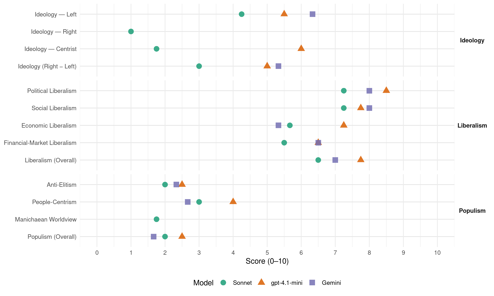

ČSSD (Czech Republic, 2006)
manifesto_id 82320_200606
Get full text: This site shows derived annotations and short verbatim quotes only. The full manifesto text is © Manifesto Project / WZB — obtain it via manifesto-project.wzb.eu using the manifesto_id above.
Headline scores
| Dimension | Sonnet | gpt-4.1-mini | Gemini |
|---|---|---|---|
| Populism (Overall) | 2.0 | 2.5 | 1.7 |
| Anti-Elitism | 2.0 | 2.5 | 2.3 |
| People-Centrism | 3.0 | 4.0 | 2.7 |
| Manichaean Worldview | 1.8 | – | – |
| Ideology (Right − Left) | 3.0 | 5.0 | 5.3 |
| Liberalism (Overall) | 6.5 | 7.8 | 7.0 |
| Political Liberalism | 7.2 | 8.5 | 8.0 |
| Social Liberalism | 7.2 | 7.8 | 8.0 |
| Economic Liberalism | 5.7 | 7.2 | 5.3 |
| Financial-Market Liberalism | 5.5 | 6.5 | 6.5 |
Evidence per dimension
Economic Liberalism
Gemini · score 6.0 · verified · chunk 1
“podporuje podnikání a snižuje administrativní zátěž”
ekonomiku ke zdravému růstu, podporuje podnikání a snižuje administrativní zátěž. Nové podniky
Gemini · score 6.0 · mixed · chunk 2
“trh s úměrnými regulačními opatřeními je základním ekonomickým nástrojem”
Standardní evropský model smíšeného hospodářství. Moderní trh s úměrnými regulačními opatřeními je základním ekonomickým nástrojem, který je nutno pěstovat
Gemini · score 4.0 · verified · chunk 3
“ochrany zaměstnanců vůči zaměstnavatelům”
znamená ochrana jedince ve slabší pozici také nutnost zachování ochrany zaměstnanců vůči zaměstnavatelům. Vztah mezi
Gemini · score 6.0 · verified · chunk 4
“otevřenou ekonomiku vysoce závislou na zahraničním obchodě”
extrémní chudoby. Česká republika má otevřenou ekonomiku vysoce závislou na zahraničním obchodě. Dovoz a vývoz zboží
gpt-4.1-mini · score 7.0 · verified · chunk 1
“podpora podnikání a snižuje administrativní zátěž”
ČSSD rozvinula program investičních pobídek a nasměrovala ekonomiku ke zdravému růstu, podporuje podnikání a snižuje administrativní zátěž.
gpt-4.1-mini · score 7.0 · verified · chunk 2
“Moderní trh s úměrnými regulačními opatřeními je základním ekonomickým nástrojem”
Standardní evropský model smíšeného hospodářství. Moderní trh s úměrnými regulačními opatřeními je základním ekonomickým nástrojem, který je nutno pěstovat a přizpůsobovat světovým trendům.
gpt-4.1-mini · score 7.0 · verified · chunk 3
“Česká zahraniční politika musí k této skutečnosti přihlížet a vytvářet vhodné podmínky pro rozvíjení vzájemně výhodné mezinárodní hospodářské spolupráce”
Česká republika má otevřenou ekonomiku vysoce závislou na zahraničním obchodě. Dovoz a vývoz zboží a služeb se podílí na tvorbě našeho hrubého národního produktu více než 70 %. Česká zahraniční politika musí k této skutečnosti přihlížet a vytvářet vhodné podmínky pro rozvíjení vzájemně výhodné mezinárodní hospodářské spolupráce. Ekonomická diplomacie má proto v naší zahraniční politice mimořádné postavení.
gpt-4.1-mini · score 8.0 · verified · chunk 4
“Česká republika má otevřenou ekonomiku vysoce závislou na zahraničním obchodě”
Česká republika má otevřenou ekonomiku vysoce závislou na zahraničním obchodě. Dovoz a vývoz zboží a služeb se podílí na tvorbě našeho hrubého národního produktu více než 70 %. Česká zahraniční politika musí k této skutečnosti přihlížet a vytvářet vhodné podmínky pro rozvíjení vzájemně výhodné mezinárodní hospodářské spolupráce.
Sonnet · score 5.0 · mixed · chunk 1
“Moderní trh s úměrnými regulačními opatřeními”
Moderní trh s úměrnými regulačními opatřeními je základním ekonomickým nástrojem, který je nutno pěstovat a přizpůsobovat světovým trendům tak, aby stále poskytoval atraktivní a příznivé prostředí
Sonnet · score 6.0 · verified · chunk 2
“Moderní trh s úměrnými regulačními opatřeními”
Moderní trh s úměrnými regulačními opatřeními je základním ekonomickým nástrojem, který je nutno pěstovat a přizpůsobovat světovým trendům.
Sonnet · score 5.0 · verified · chunk 3
“daňovými úlevami pro organizace podporující transfer”
zaváděním nástrojů nepřímé podpory, např. daňovými úlevami pro organizace podporující transfer a rozšiřování výsledků VaV
Sonnet · score 6.0 · verified · chunk 4
“vzájemně výhodné mezinárodní hospodářské spolupráce”
vytvářet vhodné podmínky pro rozvíjení vzájemně výhodné mezinárodní hospodářské spolupráce. Ekonomická diplomacie má proto v naší zahraniční politice
Financial-Market Liberalism
Gemini · score 7.0 · verified · chunk 1
“přijetí společné měny euro v roce 2010”
veřejného dluhu k HDP. Učiníme vše potřebné pro přijetí společné měny euro v roce 2010. Nadále budeme
Gemini · score 6.0 · verified · chunk 2
“ochrany spotřebitele na bankovním a finančním trhu”
Na úseku ochrany spotřebitele budeme spolupracovat s nevládními neziskovými spotřebitelskými organizacemi. V oblasti ochrany spotřebitele na bankovním a finančním trhu prosadíme vznik
gpt-4.1-mini · score 7.0 · verified · chunk 1
“stabilní finanční sektor”
Dnešní stabilní a důvěryhodný finanční sektor byl vykoupen nákladnou sanací bank a jejich následnou privatizací do rukou renomovaných finančních institucí.
gpt-4.1-mini · score 6.0 · verified · chunk 2
“Podporu využití tzv. rozvojového kapitálu („privateequity“ a „ venture capital “)”
Zvýšit transparentnost a zjednodušit regulační instituce kapitálového trhu. Podporu využití tzv. rozvojového kapitálu („privateequity“ a „ venture capital “).
Sonnet · score 5.0 · verified · chunk 1
“transparentnost finančních toků prioritou”
V našem pojetí systému důchodového pojištění je transparentnost finančních toků prioritou. Trváme na tom, že veřejné důchodové pojištění musí být finančně a institucionálně odděleno od státního rozpočtu
Sonnet · score 6.0 · verified · chunk 2
“finančního ombudsmana”
V oblasti ochrany spotřebitele na bankovním a finančním trhu prosadíme vznik finančního ombudsmana.
Political Liberalism
Gemini · score 8.0 · verified · chunk 1
“v boji za demokracii”
evropské i globální spravedlnosti, v boji za demokracii a legitimní vládu
Gemini · score 8.0 · verified · chunk 2
“pro ekonomiku je zásadní rovnost všech osob před zákonem”
Za prvořadý úkol nadále považujeme boj s korupcí ve veřejném i soukromém sektoru. Pro ekonomiku je zásadní rovnost všech osob před zákonem. Chceme věnovat
Gemini · score 8.0 · verified · chunk 3
“existence demokratického právního státu”
programových cílů existenci demokratického právního státu. Pouze v jeho
Gemini · score 8.0 · verified · chunk 4
“posílení vzájemné spolupráce vlády a parlamentu”
veřejné správy s právnímipředpisy. Posílit vzájemnou spolupráci vlády a parlamentu, např.zřízením kontrolního výboru
gpt-4.1-mini · score 8.0 · verified · chunk 1
“boj s korupcí”
další rozvoje demokracie a nesmlouvavého boje s korupcí. Zasadíme se o to, aby se tyto naše představy naplnily, a to v rozhodující míře již ke konci dalšího volebního období, tedy do roku 2010.
gpt-4.1-mini · score 8.0 · verified · chunk 2
“Boj s korupcí ve veřejném i soukromém sektoru”
Za prvořadý úkol nadále považujeme boj s korupcí ve veřejném i soukromém sektoru. Pro ekonomiku je zásadní rovnost všech osob před zákonem.
gpt-4.1-mini · score 9.0 · verified · chunk 3
“Právo a spravedlnost ČSSD považuje za jeden ze základních předpokladů pro prosazení svých programových cílů existenci demokratického právního státu”
7.1 Právo a spravedlnost ČSSD považuje za jeden ze základních předpokladů pro prosazení svých programových cílů existenci demokratického právního státu. Pouze v jeho prostředí je možné zajistit podmínky pro rozvoj jak jednotlivce, tak i celé společnosti. Respekt k lidským právům, rychlá a dosažitelná spravedlnost, ochrana jednotlivce, ale také celých společenských skupin a samotné společnosti, jeli toho třeba, jsou nezbytnými součástmi snahy pomoci vytvořit prostředí bezpečné a předvídatelné pro jednotlivce, ať už se ocitne v jakékoliv životní situaci.
gpt-4.1-mini · score 9.0 · verified · chunk 4
“Členství v EU patří k nejvýznamnějším etapám v novodobé historii českého státu”
Pro další rozvoj naší země má zásadní význam členství v Evropské unii. Členství v EU patří k nejvýznamnějším etapám v novodobé historii českého státu. Je spolehlivým základem a zárukou mírového vývoje, stability, hospodářské prosperity a sociálních jistot občanů České republiky v dnešním složitém světě.
Sonnet · score 7.0 · verified · chunk 1
“dalšího rozvoje demokracie a nesmlouvavého boje s korupcí”
Jsme přesvědčeni o nezbytnosti modernizace sociálního státu, včetně důchodového systému a snížení nezaměstnanosti, o potřebnosti dalšího rozvoje demokracie a nesmlouvavého boje s korupcí.
Sonnet · score 7.0 · verified · chunk 2
“boj s korupcí ve veřejném i soukromém sektoru”
Za prvořadý úkol nadále považujeme boj s korupcí ve veřejném i soukromém sektoru. Pro ekonomiku je zásadní rovnost všech osob před zákonem.
Sonnet · score 8.0 · verified · chunk 3
“demokratického právního státu”
ČSSD považuje za jeden ze základních předpokladů pro prosazení svých programových cílů existenci demokratického právního státu
Sonnet · score 7.0 · verified · chunk 4
“transparentnosti veřejných procesů”
Prosadíme legislativní opatření, která přispějí k transparentnosti veřejných procesů, ať už jde o zadávání veřejných zakázek, omezení souběhu výkonu
Liberalism (Overall)
Gemini · score 7.0 · verified · chunk 1
“v boji za demokracii”
evropské i globální spravedlnosti, v boji za demokracii a legitimní vládu
Gemini · score 7.0 · verified · chunk 2
“trh s úměrnými regulačními opatřeními je základním ekonomickým nástrojem”
Standardní evropský model smíšeného hospodářství. Moderní trh s úměrnými regulačními opatřeními je základním ekonomickým nástrojem, který je nutno pěstovat
Gemini · score 7.0 · verified · chunk 3
“existence demokratického právního státu”
programových cílů existenci demokratického právního státu. Pouze v jeho
Gemini · score 7.0 · verified · chunk 4
“posílení vzájemné spolupráce vlády a parlamentu”
veřejné správy s právnímipředpisy. Posílit vzájemnou spolupráci vlády a parlamentu, např.zřízením kontrolního výboru
gpt-4.1-mini · score 8.0 · verified · chunk 1
“boj s korupcí”
další rozvoje demokracie a nesmlouvavého boje s korupcí. Zasadíme se o to, aby se tyto naše představy naplnily, a to v rozhodující míře již ke konci dalšího volebního období, tedy do roku 2010.
gpt-4.1-mini · score 7.0 · verified · chunk 2
“Boj s korupcí ve veřejném i soukromém sektoru”
Za prvořadý úkol nadále považujeme boj s korupcí ve veřejném i soukromém sektoru. Pro ekonomiku je zásadní rovnost všech osob před zákonem.
gpt-4.1-mini · score 8.0 · verified · chunk 3
“Právo a spravedlnost ČSSD považuje za jeden ze základních předpokladů pro prosazení svých programových cílů existenci demokratického právního státu”
7.1 Právo a spravedlnost ČSSD považuje za jeden ze základních předpokladů pro prosazení svých programových cílů existenci demokratického právního státu. Pouze v jeho prostředí je možné zajistit podmínky pro rozvoj jak jednotlivce, tak i celé společnosti. Respekt k lidským právům, rychlá a dosažitelná spravedlnost, ochrana jednotlivce, ale také celých společenských skupin a samotné společnosti, jeli toho třeba, jsou nezbytnými součástmi snahy pomoci vytvořit prostředí bezpečné a předvídatelné pro jednotlivce, ať už se ocitne v jakékoliv životní situaci.
gpt-4.1-mini · score 8.0 · verified · chunk 4
“Členství v EU patří k nejvýznamnějším etapám v novodobé historii českého státu”
Pro další rozvoj naší země má zásadní význam členství v Evropské unii. Členství v EU patří k nejvýznamnějším etapám v novodobé historii českého státu. Je spolehlivým základem a zárukou mírového vývoje, stability, hospodářské prosperity a sociálních jistot občanů České republiky v dnešním složitém světě.
Sonnet · score 6.0 · verified · chunk 1
“rovnost příležitostí a odstraňování diskriminace”
Za zásadní dlouhodobě prosazované principy fungující demokratické společnosti považujeme rovnost příležitostí a odstraňování diskriminace, a to i na trhu práce, v pracovních vztazích a odměňování za práci.
Sonnet · score 7.0 · verified · chunk 2
“rovnost všech osob před zákonem”
Za prvořadý úkol nadále považujeme boj s korupcí ve veřejném i soukromém sektoru. Pro ekonomiku je zásadní rovnost všech osob před zákonem.
Sonnet · score 7.0 · verified · chunk 3
“Respekt k lidským právům, rychlá a dosažitelná spravedlnost”
Respekt k lidským právům, rychlá a dosažitelná spravedlnost, ochrana jednotlivce, ale také celých společenských skupin
Sonnet · score 6.0 · verified · chunk 4
“transparentnosti veřejných procesů”
Prosadíme legislativní opatření, která přispějí k transparentnosti veřejných procesů, ať už jde o zadávání veřejných zakázek
Anti-Elitism
Gemini · score 1.0 · verified · chunk 1
“nesmlouvavého boje s korupcí”
rozvoje demokracie a nesmlouvavého boje s korupcí. Zasadíme se o to
Gemini · score 3.0 · verified · chunk 2
“proti všem formám arogance veřejné moci”
boj za transparentní prostředí pro práci a podnikání. Tento boj musí být také namířen proti všem formám arogance veřejné moci. Cestou ke zkvalitnění
Gemini · score 3.0 · verified · chunk 4
“Výrazně zpřísnit postih korupce mezi veřejnými činiteli”
ČSSD navrhuje: Výrazně zpřísnit postih korupce mezi veřejnými činiteli všech stupňů. Přehodnotit imunitu
gpt-4.1-mini · score 3.0 · verified · chunk 1
“boj s korupcí”
další rozvoje demokracie a nesmlouvavého boje s korupcí. Zasadíme se o to, aby se tyto naše představy naplnily, a to v rozhodující míře již ke konci dalšího volebního období, tedy do roku 2010.
gpt-4.1-mini · score 2.0 · verified · chunk 2
“Boj za transparentní prostředí pro práci a podnikání”
Boj za transparentní prostředí pro práci a podnikání. Tento boj musí být také namířen proti všem formám arogance veřejné moci.
Sonnet · score 2.0 · verified · chunk 1
“loupeživá privatizace nastavily korupční standardy”
Předchozí tolerované neetické podnikatelské praktiky, absence vymahatelnosti práva a loupeživá privatizace nastavily korupční standardy chování, které země překonává dodnes.
Sonnet · score 2.0 · verified · chunk 2
“arogance veřejné moci”
Boj za transparentní prostředí pro práci a podnikání. Tento boj musí být také namířen proti všem formám arogance veřejné moci.
Sonnet · score 2.0 · verified · chunk 3
“boj proti korupci přináší výsledky”
nasvědčuje tomu, že tento boj proti korupci přináší výsledky. Je však potřebné napřít do tohoto nekonečného boje novou dynamiku
Sonnet · score 2.0 · verified · chunk 4
“Přehodnotit imunitu členů zákonodárného sboru”
Výrazně zpřísnit postih korupce mezi veřejnými činiteli všech stupňů. Přehodnotit imunitu členů zákonodárného sboru. Zřídit Radu vlády pro boj s korupcí
Ideology — Centrist
gpt-4.1-mini · score 6.0 · verified · chunk 1
“moderní demokratický a sociální stát”
je představa o moderním demokratickém a sociálním státě, kde mohou občané plně vzít osud do svých rukou a přitom se spolehnout na státem zaručené základní sociální jistoty.
gpt-4.1-mini · score 6.0 · verified · chunk 2
“Standardní evropský model smíšeného hospodářství”
Dlouhodobě úspěšnou cestou je: Standardní evropský model smíšeného hospodářství. Moderní trh s úměrnými regulačními opatřeními je základním ekonomickým nástrojem,
Sonnet · score 1.0 · verified · chunk 1
“Naším cílem je zvyšování životní úrovně pro všechny”
Každoročně budeme udržovat vysokou dynamiku hospodářského růstu v průměru o více než 5 % HDP ročně. Naším cílem je zvyšování životní úrovně pro všechny.
Sonnet · score 2.0 · verified · chunk 2
“Prosperita pro všechny a modernizace”
Cíl: Prosperita pro všechny a modernizace Stěžejním cílem našeho programu je zvýšení kvality života co nejširší vrstvě obyvatelstva.
Sonnet · score 2.0 · verified · chunk 3
“zvýšení podílu občanů na správě věcí veřejných”
Zvýšení podílu občanů na správě věcí veřejných ČSSD se odmítá smířit se skutečností
Sonnet · score 2.0 · verified · chunk 4
“životní jistoty občanů”
zajistí účinné uplatnění českých národních zájmů v mezinárodním společenství a životní jistoty občanů
Ideology — Left
Gemini · score 8.0 · verified · chunk 1
“společnost, založenou na lidské solidaritě”
vychází z toho, že pouze společnost, založenou na lidské solidaritě a fungujícím sociálním
Gemini · score 7.0 · verified · chunk 2
“páteří našeho systému musí zůstat progresivní daň”
ČSSD i do budoucna trvá na tom, že páteří našeho systému musí zůstat progresivní daň z příjmu fyzických osob, která nejlépe vyjadřuje solidární princip
Gemini · score 4.0 · verified · chunk 4
“sociální spravedlnosti, solidarity a ekologické udržitelnosti”
lidských práv, multikulturního uznání, sociální spravedlnosti, solidarity a ekologické udržitelnosti rozvoje. ČSSD bude prosazovat
gpt-4.1-mini · score 7.0 · verified · chunk 1
“sociální spravedlnost”
Sociální soudržnost přitom považujeme za klíčový faktor konkurenceschopnosti a hospodářského růstu. V tom spatřujeme zásadní odlišnost našeho hospodářského programu od našich ideových odpůrců, kteří staví svoji koncepci jen na co největším omezení jakékoli regulační funkce státu,jednostranném akcentu na uvolnění tržních sil,na sociální diferenciaci.
gpt-4.1-mini · score 4.0 · verified · chunk 2
“Dynamická ekonomika založená na sociálních jistotách”
Základní principy hospodářské politiky ČSSD: Dynamická ekonomika založená na sociálních jistotách. Naše hospodářská politika v období 2006 –– 2010 bude mít tyto tň hlavní priority:
Sonnet · score 5.0 · verified · chunk 1
“solidaritu, sociální soudržnost, boj proti sociálnímu vyloučení”
Sociální demokracie počítá i nadále s tím, že bude ve své hospodářské politice uplatňovat solidaritu, sociální soudržnost, boj proti sociálnímu vyloučení a sociální spravedlnost
Sonnet · score 5.0 · verified · chunk 2
“Nahrazení tohoto uspořádání primitivním liberalismem je nepřijatelné”
Evropský model hospodářství slučuje prvky motivace a rovnosti. Nahrazení tohoto uspořádání primitivním liberalismem je nepřijatelné.
Sonnet · score 4.0 · verified · chunk 3
“Odmítáme snahy o zavádění školného”
Odmítáme snahy o zavádění školného ve veřejných školách či jakékoliv jiné formy poplatků souvisejících se studiem
Sonnet · score 3.0 · verified · chunk 4
“rozvíjení evropského sociálního modelu”
Přispívala k rozvíjení evropského sociálního modelu umožňujícího paralelně hospodářský růst, sociální ochranu a respekt k životnímu prostředí
Ideology (Right − Left)
Gemini · score 8.0 · verified · chunk 1
“společnost, založenou na lidské solidaritě”
vychází z toho, že pouze společnost, založenou na lidské solidaritě a fungujícím sociálním
Gemini · score 5.0 · verified · chunk 2
“páteří našeho systému musí zůstat progresivní daň”
ČSSD i do budoucna trvá na tom, že páteří našeho systému musí zůstat progresivní daň z příjmu fyzických osob, která nejlépe vyjadřuje solidární princip
Gemini · score 3.0 · verified · chunk 4
“sociální spravedlnosti, solidarity a ekologické udržitelnosti”
lidských práv, multikulturního uznání, sociální spravedlnosti, solidarity a ekologické udržitelnosti rozvoje. ČSSD bude prosazovat
gpt-4.1-mini · score 6.0 · verified · chunk 1
“moderní demokratický a sociální stát”
je představa o moderním demokratickém a sociálním státě, kde mohou občané plně vzít osud do svých rukou a přitom se spolehnout na státem zaručené základní sociální jistoty.
gpt-4.1-mini · score 4.0 · verified · chunk 2
“Standardní evropský model smíšeného hospodářství”
Dlouhodobě úspěšnou cestou je: Standardní evropský model smíšeného hospodářství. Moderní trh s úměrnými regulačními opatřeními je základním ekonomickým nástrojem,
Sonnet · score 4.0 · verified · chunk 1
“solidaritu, sociální soudržnost, boj proti sociálnímu vyloučení”
Sociální demokracie počítá i nadále s tím, že bude ve své hospodářské politice uplatňovat solidaritu, sociální soudržnost, boj proti sociálnímu vyloučení a sociální spravedlnost
Sonnet · score 3.0 · verified · chunk 2
“Nahrazení tohoto uspořádání primitivním liberalismem je nepřijatelné”
Evropský model hospodářství slučuje prvky motivace a rovnosti. Nahrazení tohoto uspořádání primitivním liberalismem je nepřijatelné.
Sonnet · score 3.0 · verified · chunk 3
“pilířem našeho školství byly nadále školy veřejné”
Chceme, aby pilířem našeho školství byly nadále školy veřejné. Odmítáme snahy o zavádění školného
Sonnet · score 2.0 · verified · chunk 4
“rozvíjení evropského sociálního modelu”
Přispívala k rozvíjení evropského sociálního modelu umožňujícího paralelně hospodářský růst, sociální ochranu a respekt k životnímu prostředí
Ideology — Right
Sonnet · score 1.0 · verified · chunk 1
“budeme hájit české národní zájmy”
Větším zapojením do evropského integračního procesu a rozvíjením transatlantických vazeb zásadním způsobem upevníme mezinárodní postavení a bezpečnost České republiky. Budeme hájit české národní zájmy v Evropě
Sonnet · score 1.0 · verified · chunk 2
“podporu českých výrobků na domácím trhu”
podporu českých výrobků na domácím trhu, a to i za podpory sociálních partnerů
Sonnet · score 1.0 · verified · chunk 3
“boj s nelegální migrací”
boj s terorismem, korupcí, nelegální migrací a nelegální zaměstnaností cizinců
Sonnet · score 1.0 · verified · chunk 4
“českých národních zájmů v mezinárodním společenství”
zajistí účinné uplatnění českých národních zájmů v mezinárodním společenství a životní jistoty občanů
Manichaean Worldview
Sonnet · score 2.0 · verified · chunk 1
“ČSSD odmítá nevyzkoušené experimenty”
ČSSD odmítá nevyzkoušené experimenty, se kterými přichází ODS v Modré šanci a které nemají obdobu v žádné civilizované zemi na světě
Sonnet · score 1.0 · verified · chunk 2
“Mýtus, že naše vláda chce jen zvyšovat daně”
Mýtus, že naše vláda chce jen zvyšovat daně, se tedy ukázal jako zcela lichý.
Sonnet · score 2.0 · verified · chunk 3
“účelově konstruována obvinění ze strany osob”
Skutečnost, že proti vládní straně jsou účelově konstruována obvinění ze strany osob, proti kterým jsou vedena trestní řízení
Sonnet · score 2.0 · verified · chunk 4
“plánům ODS a jejího čestného předsedy Václava Klause na demontáž Evropské unie”
Rozhodně se stavějí proti plánům ODS a jejího čestného předsedy Václava Klause na demontáž Evropské unie, což by znamenalo návrat ke konfliktním vztahům
People-Centrism
Gemini · score 2.0 · verified · chunk 1
“DESET ZÁVAZKŮ OBČANŮM ČESKÉ REPUBLIKY”
konkrétní a splnitelné cíle. DESET ZÁVAZKŮ OBČANŮM ČESKÉ REPUBLIKY Každoročně budeme
Gemini · score 4.0 · verified · chunk 2
“Jediné skutečné bohatství, které moderní stát má, jsou jeho obyvatelé”
Dlouhodobý úspěch České republiky chceme založit na znalostech a vzdělání. Jediné skutečné bohatství, které moderní stát má, jsou jeho obyvatelé. Tímto směrem chceme
Gemini · score 2.0 · verified · chunk 4
“závazek, který dali občanům”
v minulém volebním období závazek, který dali občanům. Zasadili se o posílení mezinárodního
gpt-4.1-mini · score 5.0 · verified · chunk 1
“lidé to od nás očekávají”
a že se musíme zbavovat již nefunkčních, ale o to více vžitých návyků. Lidé to od nás očekávají a postavení moderní strany v moderní společnosti to vyžaduje.
gpt-4.1-mini · score 3.0 · verified · chunk 2
“Prosperita pro všechny a modernizace”
Cíl: Prosperita pro všechny a modernizace Stěžejním cílem našeho programu je zvýšení kvality života co nejširší vrstvě obyvatelstva.
Sonnet · score 4.0 · verified · chunk 1
“Prosperita pro všechny a modernizace”
Stěžejním cílem našeho programu je zvýšení kvality života co nejširší vrstvě obyvatelstva. K dosažení tohoto cíle máme dva stěžejní přístupy.
Sonnet · score 3.0 · verified · chunk 2
“Prosperita pro všechny a modernizace”
Cíl: Prosperita pro všechny a modernizace Stěžejním cílem našeho programu je zvýšení kvality života co nejširší vrstvě obyvatelstva.
Sonnet · score 3.0 · verified · chunk 3
“každý občan říci svůj názor”
aby v závažných případech mohl každý z obyvatel říci svůj názor a bylo k němu skutečně přihlíženo
Sonnet · score 2.0 · verified · chunk 4
“životní jistoty občanů”
zajistí účinné uplatnění českých národních zájmů v mezinárodním společenství a životní jistoty občanů. Budou k tomu využívat všech nástrojů
Populism (Overall)
Gemini · score 1.0 · verified · chunk 1
“nesmlouvavého boje s korupcí”
rozvoje demokracie a nesmlouvavého boje s korupcí. Zasadíme se o to
Gemini · score 2.0 · verified · chunk 2
“proti všem formám arogance veřejné moci”
boj za transparentní prostředí pro práci a podnikání. Tento boj musí být také namířen proti všem formám arogance veřejné moci. Cestou ke zkvalitnění
Gemini · score 2.0 · verified · chunk 4
“Výrazně zpřísnit postih korupce mezi veřejnými činiteli”
ČSSD navrhuje: Výrazně zpřísnit postih korupce mezi veřejnými činiteli všech stupňů. Přehodnotit imunitu
gpt-4.1-mini · score 3.0 · verified · chunk 1
“boj s korupcí”
další rozvoje demokracie a nesmlouvavého boje s korupcí. Zasadíme se o to, aby se tyto naše představy naplnily, a to v rozhodující míře již ke konci dalšího volebního období, tedy do roku 2010.
gpt-4.1-mini · score 2.0 · verified · chunk 2
“Boj za transparentní prostředí pro práci a podnikání”
Boj za transparentní prostředí pro práci a podnikání. Tento boj musí být také namířen proti všem formám arogance veřejné moci.
Sonnet · score 2.0 · verified · chunk 1
“loupeživá privatizace nastavily korupční standardy”
Předchozí tolerované neetické podnikatelské praktiky, absence vymahatelnosti práva a loupeživá privatizace nastavily korupční standardy chování, které země překonává dodnes.
Sonnet · score 2.0 · verified · chunk 2
“arogance veřejné moci”
Boj za transparentní prostředí pro práci a podnikání. Tento boj musí být také namířen proti všem formám arogance veřejné moci.
Sonnet · score 2.0 · verified · chunk 3
“nekompromisní boj s korupcí”
ČSSD považuje nekompromisní boj s korupcí za jednu z priorit bezprostředně ovlivňujících bezpečnost země
Sonnet · score 2.0 · verified · chunk 4
“plánům ODS a jejího čestného předsedy Václava Klause na demontáž Evropské unie”
Rozhodně se stavějí proti plánům ODS a jejího čestného předsedy Václava Klause na demontáž Evropské unie, což by znamenalo návrat ke konfliktním vztahům
Social Liberalism